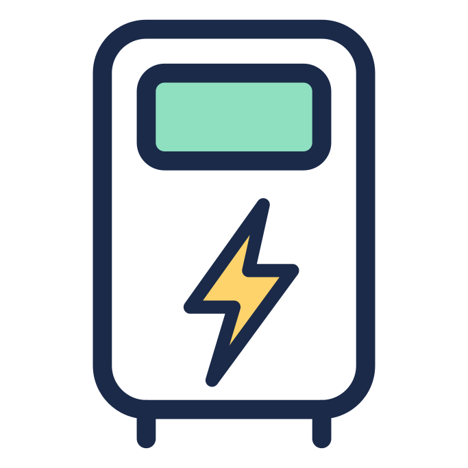
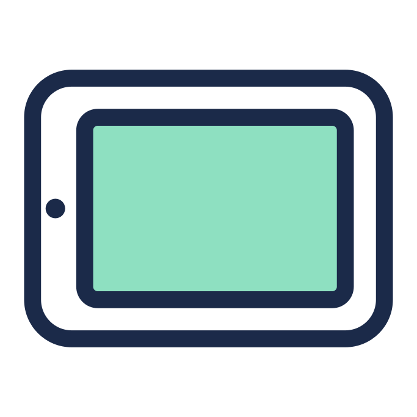
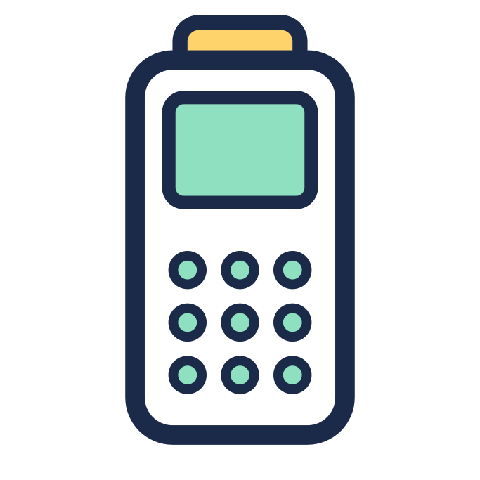
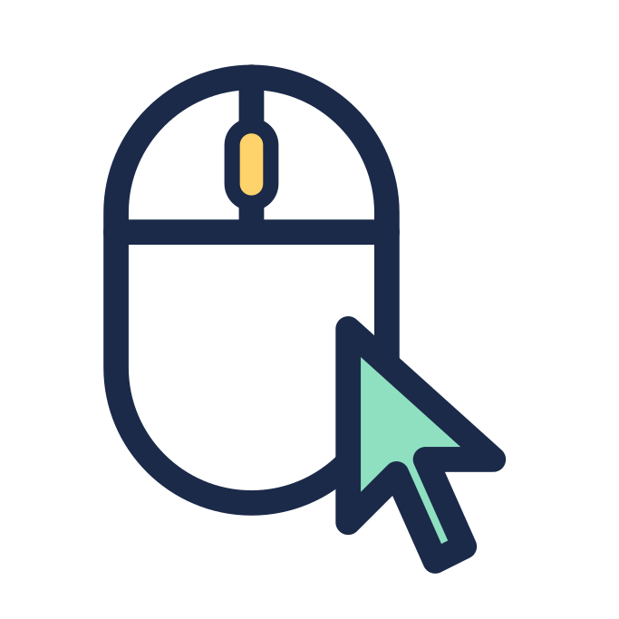
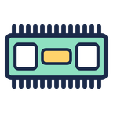
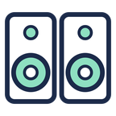
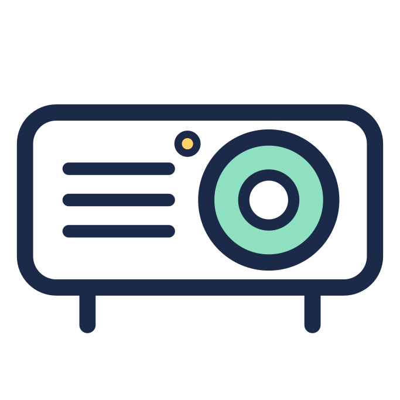

Complete list of IT equipment & e-waste we collect & recycle
- We recycle almost everything on this page for FREE, but we charge to recycle some types of screens and printers
- We collect for free, if you have at least 10 laptops, PCs & servers to recycle (any combination of these).
What we collect
This page gives you a general idea of what we handle — and almost all of it is free to recycle except where noted. See our frequently-asked questions or get in touch if you have any questions. We are here to help.
How do I get a free collection?
We will collect from your premises free of charge — All you need to do is have at least 10 qualifying items for us to collect, and the collection will be free of charge from your premises.
It can be any combination of laptops, PCs or servers (including Apple macs & laptops), you just need 10 or more of these items, and to be in mainland UK.
IT RECYCLING CHARGESDesktop PCs
Desktop, workstations, all-in-ones, small form factors, micro computers.
Apple Mac Desktops
All Apple Macs: iMac, eMac, Mac Pro, Mac Studio, Mac Mini, all formats and generations.
Legacy computer systems
If you have an old BBC micro or an Sun UltraSPARC cluttering up a cupboard, we’ll recycle it for you.
Windows laptops
All types: business laptops, netbooks, Chromebooks, 2-in-1, ultraportable, ultrathin laptops
All brands: HP, Dell, Lenovo, Acer, ASUS, MSI, Microsoft, Samsung
Apple Laptops
Apple: MacBook Pro, unibody, MacBook Air, Retina MacBook Pro...
Old Apple laptops: legacy MacBooks & MacBook Air, etc...
Specialist Laptops
Specialist varieties: Rugged, diagnostics, vintage, workstation, gaming laptops etc.
Servers & infrastructure equipment
We recycle all servers, network, data, telephony and power management equipment from offices, data centres, co-location facilities and more.
Servers
All form factors: Rack mount: 1U/2U/3U/4U, blade servers, high-density servers, multi-node servers, freestanding workstations & tower servers.
Any brand: Dell, HP (HPE), Lenovo, IBM, Cisco, Supermicro, Fujitsu, Oracle, Huawei, Inspur
Infrastructure
Networking: switches, routers, access points, firewalls, load balancers, network cables, patch panels, gateways
Telephony: IP phones, VoIP systems, PBX systems, conference phones, softphones, headsets

Power management
Power management: uninterruptible power supplies (UPS), power distribution units (PDUs), surge protectors, backup generators, inverters
We charge to collect large server racks & cabinets
Laptop caddy/trolley: £100 each
We aim to collect racking & cabinets for free, but in some cases there may be a charge depending on the type and size of racking you need us to collect. Please contact us and ask for a quote – you can always send us a photo of the racking to help us quote.
Mobile devices & handheld equipment
We collect and recycle all types of mobile devices, including phones, tablets, EPOS hardware, etc.
Mobile phones
Mobile Phones: iPhone, Android, BlackBerry, Windows phones, smartphones, flip phones, rugged phones, retro phones

iPads & Tablets
Tablets: Android devices, Windows tablets, e-readers and Kindles, rugged tablets, convertible tablets, graphics tablets
iPad: iPad Air, iPad Mini, iPad Pro — all generations and models.

Professional handheld devices
EPOS hardware: terminals, scanners, tablets, printers
Card readers: any brand (Epson, Zebra, Honeywell, Datalogic, Star Micronics, ELO etc.)
Screens, displays & televisions
We offer nationwide collection and recycling of all your computer monitors, display & advertising screens.
Monitors & televisions
All types: LCD, TFT, LED, OLED, IPS, TN, VA, curved, ultrawide, 4K, gaming, touch screen, portable, HDR, professional, broadcast.
All brands: Samsung, LG, Sony, Panasonic, TCL, Hisense, Vizio, Philips, Sharp, Toshiba...
Commercial displays
Advertising & merchandising screens: All sizes of digital advertising / experience / merchandising screens typical of those used at events, in-store retail and experiential destinations such as theme parks and stadiums.
We charge to recycle some types of display
All charges are ex-VAT
- Displays up to 30", with working screens: FREE
- Displays up to 30", with cracked or broken screens: £7
- Displays over 30", working or broken/cracked: £1/inch
- Interactive whiteboards/smartboards: all sizes, working or broken/cracked: £1/inch
We do not accept CRT screens
We won’t be able to collect the older style of cathode-ray screens, as found in old televisions and monitors, as they require special handling owing to the hazardous materials within them.
Storage media, peripherals and accessories
We securely destroy data found on hard disk drives (HDDs), solid-state drives (SSDs), flash drives and all internal storage media, and we recycle all components and accessories. Find out about our secure data destruction process.
Storage drives & media
Internal storage devices: internal hard drives, SSDs, external hard drives, flash drives...
External devices: NAS devices, tape drives, tape cartridges, memory cards, USB sticks...

Peripherals & accessories
Peripherals and accessories: keyboards, mice, webcams, headsets, speakers, docking stations, styluses, joysticks...

Components & internal hardware
Chips, modules & componentry: CPUs, GPUs, RAM modules, hard drives, power supplies, motherboards, cooling fans, heatsinks, network interface cards, PCBs, optical drives
Cables, wires & connectors
Wires and cables: all types of cabling, wires, interconnects and adaptors for power, data etc.
All types of WEEE & IT
Miscellaneous IT and electrical equipment: laptop batteries, chargers, power adapters, surge protectors, circuit boards, e-waste, IoT devices, lead-acid batteries, shredders
AV & media devices
We recycle all types of AV equipment, including that used in studios, theatres, outside-broadcast & on-location assets to assets used on tour and in venue. This includes the rigging & cabling associated with audio and video devices.

Audio
- Amplifiers
- Audio cables, multicore etc.
- Audio mixers & desks
- Field recorders
- Headphones
- Microphones of all types
- Mounts & adapters
- Rackmount audio processing, recorders & effects
- Speakers & subwoofers
- Studio monitors

Video
- Displays, LED & TFT screens
- Lasers
- Media players
- Projectors
- Recording equipment
- Video editing equipment
- Video switchers
Broadcast, production & venue
- Cables & connectors
- Cameras, dollies, steady-rigs/stabilisers
- Front-of-house desks & equipment
- Lighting equipment including lights, cabling & controls
- Stands, mounts & rigging
- Teleprompters / autocue
- Wireless audio and video equipment
Why Saving Tech?
Secure, carbon-negative IT recycling for businesses that need old equipment handled properly — with free qualifying collections, data destruction and certificates provided where applicable.
Secure data destruction
We securely erase, degauss or destroy data-bearing devices where required, helping protect sensitive business information before equipment is reused or recycled.
Certificates and compliance
We provide the documentation you need for your records, including Waste Transfer Notes, Certificates of Destruction and carbon offset certificates where applicable.
Responsible & Sustainable
We prioritise reuse before materials recycling and offset twice the generated through our service, helping your old IT take a more responsible route.